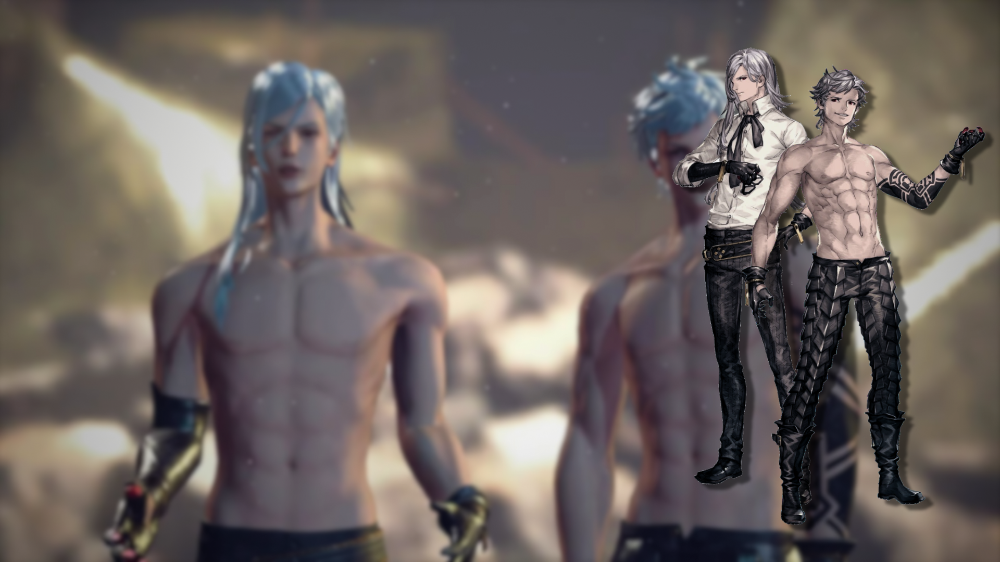
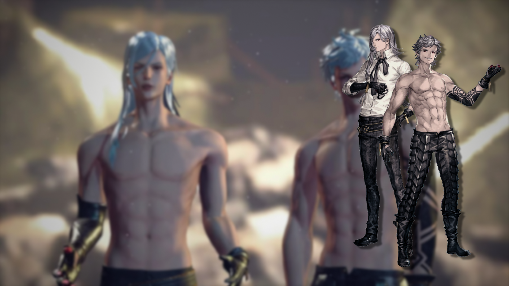

NieR: Automata
NieR: Automata é um jogo de ação e RPG lançado em 2017. Situado em um futuro pós-apocalíptico, a Terra foi invadida por alienígenas que enviaram máquinas para destruir a humanidade, forçando os sobreviventes a fugirem para a Lua. Lá, eles criaram a organização de androides YoRHa para combater as máquinas e recuperar o planeta. O jogo segue três androides principais: 2B, 9S e A2. Conhecido por sua narrativa profunda e filosófica, o jogo explora temas como humanidade, consciência e livre-arbítrio, e combina combate dinâmico com exploração e hacking.
YoRHa 2B
YoRHa No.2 Type B, ou apenas 2B, é a protagonista principal de NieR: Automata. Ela é uma androide YoRHa criada para combater as formas de vida mecânicas que foram criadas por alienígenas que invadiram a Terra no ano de 5012. Apesar de sua aparência exterior de calma, 2B esconde uma profunda luta interna com as suas emoções, que pelas regras da YorHA, não deveriam existir. Sua relação com 9S, outro androide YoRHa, que o acompanha em muitas missões, é complexa e revela seus sentimento por 9S, que desenvolve parte da história de Nier: Automata. À medida que a história se desenrola, 2B enfrenta verdades desconcertantes sobre o propósito de sua existência, e o ciclo interminável e guerra que ela e outros androides estão presos.
YoRHa 9S
YoRHa No.9 Type S, ou apenas 9S, também é um dos protagonistas de NieR: Automata. Ele é um androide Scanner, especializado em reconhecimento e coleta de dados, com habilidades avançadas de hacking que são cruciais para o progresso da história. Ao contrário de outros androides, 9S é mais emocional e curioso, frequentemente questionando ordens e refletindo sobre sua existência e a guerra contra as máquinas. Ele desenvolve um forte vínculo com 2B, sua parceira de missão, e essa relação é central para a trama do jogo. A personalidade amigável de 9S esconde uma vulnerabilidade emocional que é explorada à medida que ele enfrenta as duras realidades de seu mundo, abordando temas de identidade, sacrifício e busca por significado.
YoRHA A2
YoRHa Type A No.2, ou apenas A2, também é uma das protagonistas de NieR: Automata. Ela é uma androide de combate mais antiga da YoRHa, projetada para operações de ataque, mas opera como uma solitária, tendo escapado da organização após um incidente que a deixou desconfiada. Conhecida por sua atitude rebelde e silenciosa, A2 evita interações com outros androides e carrega um profundo ressentimento pelo que ocorreu em seu passado. Sua história ainda é um mistério, mais algumas partes revelam suas motivações e traumas ao longo do jogo. Apesar de sua aparência dura, A2 tem um forte desejo de proteger outros androides e se vê confrontada com escolhas que desafiam suas crenças. Sua jornada explora temas de redenção, vingança e a busca por respostas em um mundo devastado pela guerra.
Commander
A Comandante da YoRHa, conhecida como Commander, é a líder da organização YoRHa em NieR: Automata. Ela coordena as operações dos androides a partir da base orbital Bunker, supervisionando a guerra contra as máquinas alienígenas na Terra. Como uma figura autoritária e determinada, ela mantém disciplina e controle sobre suas tropas, sendo altamente respeitada. Embora rígida, a Commander carrega o peso de segredos sombrios sobre a YoRHa e a guerra. Sua relação com 2B, 9S, e outros androides revela as complexidades de sua liderança e o dilema moral entre seguir ordens superiores e suas próprias convicções. Ela simboliza sacrifício e dever em meio ao conflito.
Gemeos
Adam e Eve são dois dos principais antagonistas de NieR: Automata. Eles são máquinas humanoides que evoluíram a partir das unidades de combate alienígenas enviadas à Terra. Adam, o irmão mais velho, é calculista, intelectual e obcecado por entender a natureza humana, especialmente as emoções como a dor. Ele realiza experimentos cruéis em busca de conhecimento, tornando-se um adversário perigoso e imprevisível. Eve, o irmão mais novo, é mais impulsivo e emocional, com uma forte ligação com Adam. Após a morte de Adam, Eve perde o controle, tornando-se uma ameaça imensa para os protagonistas do jogo. Juntos, eles desempenham papéis centrais na trama, simbolizando diferentes aspectos da busca por significado e poder.
Adam
Eve